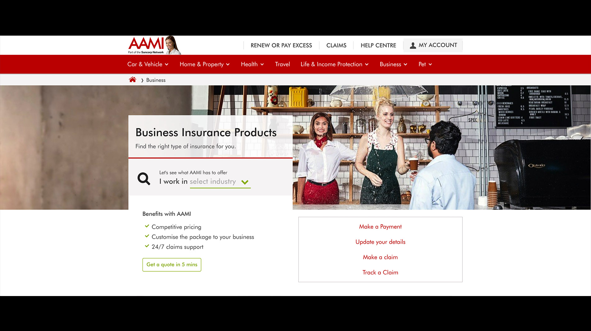

Summary of the solution
We ran a test that consisted of a redesigned banner area with a modal form attached. Users could then interact with this new form to be more informed about what type of business insurance they needed before being taken to the quote funnel.
The Brief
The brief was simply to run a test in the attempt to increase sales of Business Insurance. Due
to the
nature of this, the opportunity to test a new CTA was taken advantage of during our design
process.
Before beginning with sketching or wireframing we were tasked with creating a matrix of
possible Business
Insurance types a user could qualify for, based on a set of questions they were to fill out in
a
form.
Once we had established the flow mapping, we began our work in Sketch where we started by
redesigning the banner area. By moving content to the left of the image we created a pattern
that could be repeated accross all product pages site wide and has now started to be
implemented (image above).
It had been raised that the lead designer for AAMI was looking to left align as much as
possible elseware on the site, so in an attmept to reduce the amount of change required later
we
tackled the
challenge of desifgning the product page banner now, rather than just throwing in the modal
experience on a generic CTA.
The images below display one of the possible tracks of the modal flow starting after clicking the new CTA on the product page. Also a note that these modals needed to follow styleguide specifications in order for it to be built by the in house Content Team if this test was deemed to be successful.